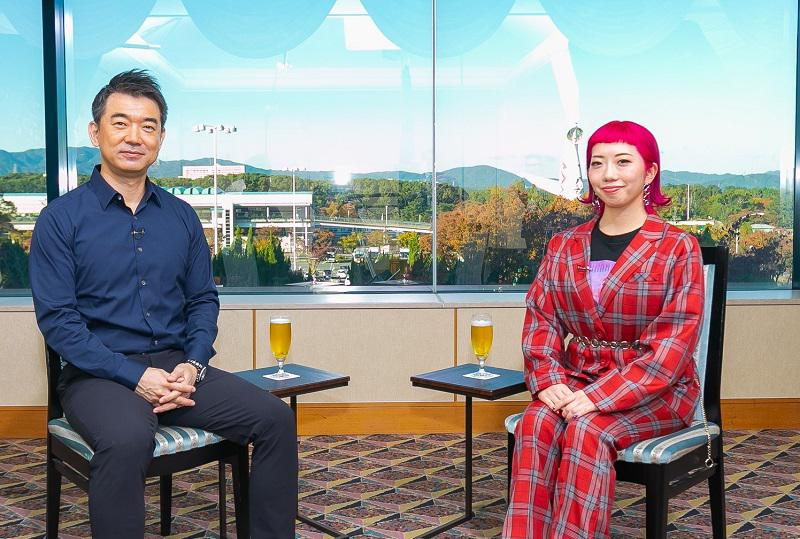
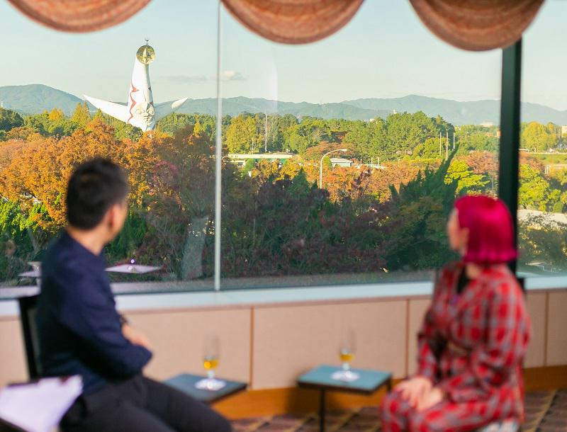

【対談】ａｋａｎｅ×橋下徹 大阪の高校生が、バブル時代のＯＬに扮して踊り、話題になった「バブリーダンス」。チームを指導した振付師のａｋａｎｅは大阪・関西万博のスペシャルサポーターに就任している。大阪の祭典をどう盛り上げるのかーー今後の展望を聞いた。
ゲスト akane
振付師。１９９２年、大阪府生まれ。日本女子体育大学を卒業。母校大阪府立登美丘高等学校のダンス部を指導し、日本高校ダンス部選手権を連覇。大阪・関西万博誘致スペシャルサポーター。
大阪の高校生が、バブル時代のＯＬに扮して踊り、話題になった「バブリーダンス」。チームを指導した振付師のａｋａｎｅは大阪・関西万博のスペシャルサポーターに就任している。大阪の祭典をどう盛り上げるのかーー今後の展望を聞いた。

橋下徹（以下、橋下）
今日のゲストはＣＭなどの振付師として活躍するａｋａｎｅさんです。ａｋａｎｅさんは僕が市長だった２０１５年、大阪府立登美丘高校のダンス部を日本高校ダンス部選手権優勝に導いた方です。
17年には高校生たちがバブル時代のお姉さんのファッションで踊る「バブリーダンス」が話題を呼び、25年大阪・関西万博の誘致にもスペシャルサポーターとして力を貸してもらいました。そもそも、なぜ登美丘高校に関わることになったんですか？
ａｋａｎｅ
私の出身校なんです。もともとあったダンス同好会が、私の代にダンス部に昇格して、11年から後輩に教えるようになりました。東京の大学に進学したので、通いながら指導を続けて卒業後に大阪に戻り、今は総監督をしてます。
橋下
僕が政治家を辞めた後、17年のＮＨＫ紅白歌合戦にバブリーダンスで高校生たちが出演したよね。
YouTubeでもすごい再生回数で、知事の松井一郎さん（当時）も大阪を元気づけてくれたと喜んでました。
あえて振り付けをバブル時代にした発想はどこから？
ａｋａｎｅ
私、１９８０年代のダンスミュージックがすごく好きで、それまでも当時の曲で作品を作っていたんです。バブリーダンスを踊った学年の子たちは、実はそれほど技術的に上手じゃなかったので、見た目のインパクトを重視しようと思ったのが理由ですね。ロングヘア、タイトスカート、ヒールって、ダンスに不向きな格好ですけど、あえてそれで真剣に踊る姿が見てみたかった。
実際に発表したら、生徒と親世代の間で「お母さん、昔こんな格好してたん？ 派手すぎやろ」「若いときの流行りやで」といった会話が生まれて、いろんな世代に楽しんでもらえたのがヒットした理由だと感じています。
橋下
カッコよくてスタイリッシュな今風ではなく、バブル時代の古い雰囲気なんだけど、踊りはキレッキレっていうの？ その組み合わせがインパクトあったんだろうね。YouTubeの動画が全世界で８０００万回も再生されてるとか。
ａｋａｎｅ
正確には８３００万回です（対談時点）。撮影やパソコンでの映像編集作業も自分でやったので、本当に驚きですね。
橋下
すごい、それだけ見られて収入にはなってる？
ａｋａｎｅ
なってないです。著作権の関係があるので。
橋下
もったいないなあ。うまくやれば部費とかの足しになると思うんだけど。
ａｋａｎｅ
それをあえてしないのがいいんですよ（笑）。それにもう、バブリーダンスは「みんなのもの」だと思いますし。
橋下
なるほど、きっと公共的な時代が求めていたダンスだから、大ヒットしたんだね。高校生にダンスを指導するときに気をつけていることはありますか？
ａｋａｎｅ
ダンスでは踊り手の感情がすごく重要で、それを育てるのが私たちの一番大切な仕事だと思います。楽しい、嬉しいに加えて、悔しさや怒り、悲しみのようなネガティブな感情まで、すべてがダンスには絶対必要なんです。
それを日頃の部活動のなかで、感じさせてあげることを大切にしています。
橋下
高校生たちのやる気はどうやって高めているの？
ａｋａｎｅ
スパルタ指導は今の時代絶対ありえないし、私は振付師なので、生徒自身が踊りたくなるいい作品を作ってあげるのが一番かなと思いますね。「この振り付けめちゃカッコいい！」とテンションが上がれば、自然にみんなやる気が出てきます。質もめっちゃこだわって、バブリーダンスでは首の動かし方のスピードや角度を制御して、ロングヘアのなびき方まで揃えています。
橋下
髪の毛のコントロールまでしてるのか。すごいね。そもそもａｋａｎｅさんがダンスを始めたきっかけはなんですか？
ａｋａｎｅ
３歳のときに、母親が近所のジャズダンス教室に私を入れたんです。お遊戯を楽しそうに踊ってたので、「この子はダンスが好きそうだ」と思ったんでしょうね。それからバレエも始めてどんどんダンスが好きになり、大学もダンスが学べるところに進学しました。
橋下
大学でダンスが学べるの？
ａｋａｎｅ
日本女子体育大学に、舞踊学専攻というのがあるんです。ジャズ、クラシック、創作系ダンスなどいろいろな踊りが学べるのが魅力だったんですが、卒業後のことは考えてませんでしたね。今でこそ振付師も注目されるようになりましたけど、昔は芸能人のバックダンサーぐらいしか稼ぐ道がなく、両親も「ダンスで食べていけるの？」と心配してました。
橋下
でも最初にダンスに興味を持ったきっかけは、お母さんだからね（笑）。
ａｋａｎｅ
そうなんです。母親も「私が行かせてしまったから仕方ないね」と言ってました。だから反対はされなかったんですけど、「ダンスで生きていく」根性があるかどうかは、今も常に問われている気がします。ＳＮＳでダンスの映像を流せるようになって、それが仕事につながる機会が増えてきたことで助かってますね。
■特大の文化祭をどう成功させるか

橋下
僕はぜんぜんダンスに詳しくないんだけど、娘が韓国のアイドルグループ「ＴＷＩＣＥ」のビデオを朝から晩までずっと見てるから、メロディを覚えちゃった（笑）。見せてもらったらダンスがキレッキレで、独特の可愛らしい雰囲気がある。あの空気を出せるのが、クリエイターなんだろうね。
ａｋａｎｅ
ダンサーの目から見ると、韓国のダンサーは基礎がしっかりした上手な子が集まってますね。ＴＷＩＣＥのダンスはめっちゃ難しくて、簡単そうに見える動きも、なかなか真似できません。たくさんの人数の動きを揃えながら、一人ひとりの個性もクリアに出ていて、動きに無駄がない。洗練されているから、見ていて気持ちいいんです。彼女たちみたいに踊りを通じて自分自身の魅力や個性、考えていることをうまく表現できるようになったら、ダンサーとして一人前ですね。
橋下
ａｋａｎｅさんは25年に開催される大阪・関西万博のスペシャルサポーターとして、招致活動のときに応援ダンスを夢洲で披露してくれたんだよね。あそこ、何もない場所だったでしょ（笑）。
ａｋａｎｅ
そうですね、でもすごい広くて気持ちよかったです。
橋下
１９８０年代、あそこに「テクノポート」という未来都市を作る構想を描いてたんだけど、頓挫してずっと空き地になっていたんだよね。
それで次に「08年に大阪オリンピックを呼ぼう」と頑張ったんだけど、また大失敗した。
ａｋａｎｅ
北京に負けましたね。記憶に新しいです。
橋下
そんなどうにも使い道のないぺんぺん草の生えた土地に、25年の万博が決まったわけですよ。決定したときどう思いました？
ａｋａｎｅ
嬉しかったですね。私は岡本太郎さんが大好きで、前から万博に興味を持っていたんです。大学時代も関東のアトリエや美術館を見に行ったり、芸術に携わる人間として、岡本さんの言葉も胸に響くものがあって。当時のファッションもオシャレで好きだし、万博のときに展示された動く歩道とか携帯電話が、今実現していることにも驚きます。それで「岡本太郎さんが総合演出してたんか。私もいつかそんな仕事ができたらいいな」と思っていたら、大阪に誘致する動きが始まって「何とか関わりたい！」と思うようになりました。
橋下
今、松井さん吉村さんが中心になって、日本の最高の技術をぜんぶ夢洲の万博会場に集めようとしている。大阪が強い医療や健康に関する最先端の研究も、大きな柱にします。しかも展示するだけでなく、来場者に体験、参加してもらうという方向性が決まっている。僕はそこでａｋａｎｅさんが音頭をとって、高校生や大学生が中心となる「特大の文化祭」を同時にやれないかと思うんだよね。その中には当然、世界レベルのダンスパフォーマンスも入れて。そんなアイデア、どう思います
か？
ａｋａｎｅ
それはやれたらすごく嬉しいですね。先日、万博の集まりで中心メンバーのコシノジュンコさんや大阪大学の澤芳樹教授が、「若者たちが万博を盛り上げ、ともに作っていってほしい」という話をされていたんです。それを聞いて、私もぎりぎり若者だなと（笑）。ダンス部の生徒たちは万博に関心を持っていないので、一生懸命周囲の若い子たちに、「万博のステージで踊れるかもしれへんで！」とプレゼンしているところです。
橋下
昨年、ラグビーのＷ杯が大成功したけれど、その成功の裏には、前大会が終わってすぐから４年間かけた準備があったんだよね。万博までの５年もそんなに時間の余裕はない。ａｋａｎｅさんたち令和の世代のエネルギーに満ちた若者が、「特大の文化祭」である万博を大いに盛り上げていってほしい。会場で最高のダンスパフォーマンスが見られることを楽しみにしてます！
※「みんなのJAPAN MOVE」を再構成（プレジデント社 PRESIDENTより抜粋）
▼【公式メールマガジン＆公式オンラインサロン 】へのご入会はこちらから！